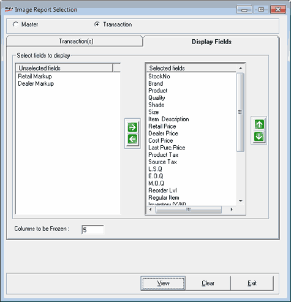

The Display Fields tab on the Image Report Selection window is as shown.

Select fields to display: Select the fields to be displayed in the transaction report.
Unselected fields: Displays the fields that are not selected for display.
Selected fields: Displays the fields that are currently selected for the report. This list is based on the values selected during installation or on the settings you have chosen in Item Master creation window and saved earlier.
In Unselected
fields click to select the fields you want to add to display. Multiple
selections are possible. Click to move the selected fields
to the Selected fields list. You
can use to remove the field names from the Selected
fields list. You can rearrange the order of the fields in the Selected fields list using and  .
.
Columns to be Frozen: Enter the number of columns to be frozen on the left hand side, while scrolling the report horizontally.